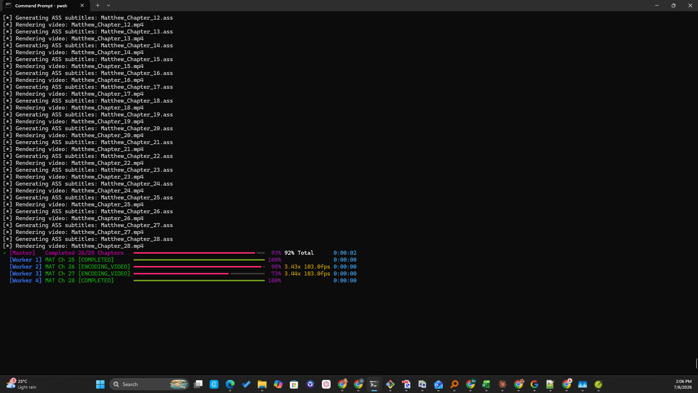

Sample Terminal Output — Reference for Documentation
Raw CLI output captured from real runs during development, kept verbatim so it can be reused/quoted when writing user-facing docs (README, getting_started.md, user_guide.md).
Live multi-worker progress UI (screenshot)

A 4-worker GPU batch render of Matthew (28 chapters) approaching completion — shows the
[Master] overall progress bar alongside each [Worker N] bar with live speed/fps/ETA,
the same "Live Batch Monitor" UI documented in docs/user_guide.md's multi-worker section.
vidx.exe -c john.yaml --gpu -y (single worker, 21 chapters)
Command:
Output:
requests\__init__.py:92: RequestsDependencyWarning: Unable to find acceptable character detection dependency (chardet or charset_normalizer).
╭───────────────────────────────────────────────── ⚡ LIVE BATCH MONITOR ⚡ ──────────────────────────────────────────────────╮
│ VIDX Scripture Video Batch Processing Engine │
│ Total Chapters in Queue: 21 | Columns: Worker • Book/Ch [Status] • Progress • Speed/FPS • ETA │
╰─────────────────────────────────────────────────────────────────────────────────────────────────────────────────────────────╯
=== Starting Batch Run (21 jobs, 1 workers) ===
[*] Generating ASS subtitles: John_Chapter_01.ass
[*] Rendering video: John_Chapter_01.mp4
[*] Generating ASS subtitles: John_Chapter_02.ass
[*] Rendering video: John_Chapter_02.mp4
[*] Generating ASS subtitles: John_Chapter_03.ass
[*] Rendering video: John_Chapter_03.mp4
[*] Generating ASS subtitles: John_Chapter_04.ass
[*] Rendering video: John_Chapter_04.mp4
[*] Generating ASS subtitles: John_Chapter_05.ass
[*] Rendering video: John_Chapter_05.mp4
[*] Generating ASS subtitles: John_Chapter_06.ass
[*] Rendering video: John_Chapter_06.mp4
[*] Generating ASS subtitles: John_Chapter_07.ass
[*] Rendering video: John_Chapter_07.mp4
[*] Generating ASS subtitles: John_Chapter_08.ass
[*] Rendering video: John_Chapter_08.mp4
[*] Generating ASS subtitles: John_Chapter_09.ass
[*] Rendering video: John_Chapter_09.mp4
[*] Generating ASS subtitles: John_Chapter_10.ass
[*] Rendering video: John_Chapter_10.mp4
[*] Generating ASS subtitles: John_Chapter_11.ass
[*] Rendering video: John_Chapter_11.mp4
[*] Generating ASS subtitles: John_Chapter_12.ass
[*] Rendering video: John_Chapter_12.mp4
[*] Generating ASS subtitles: John_Chapter_13.ass
[*] Rendering video: John_Chapter_13.mp4
[*] Generating ASS subtitles: John_Chapter_14.ass
[*] Rendering video: John_Chapter_14.mp4
[*] Generating ASS subtitles: John_Chapter_15.ass
[*] Rendering video: John_Chapter_15.mp4
[*] Generating ASS subtitles: John_Chapter_16.ass
[*] Rendering video: John_Chapter_16.mp4
[*] Generating ASS subtitles: John_Chapter_17.ass
[*] Rendering video: John_Chapter_17.mp4
[*] Generating ASS subtitles: John_Chapter_18.ass
[*] Rendering video: John_Chapter_18.mp4
[*] Generating ASS subtitles: John_Chapter_19.ass
[*] Rendering video: John_Chapter_19.mp4
[*] Generating ASS subtitles: John_Chapter_20.ass
[*] Rendering video: John_Chapter_20.mp4
[*] Generating ASS subtitles: John_Chapter_21.ass
[*] Rendering video: John_Chapter_21.mp4
[Master] Completed 21/21 Chapters ━━━━━━━━━━━━━━━━━━━━━━━━━━━━━━━━━━━━━━━━ 100% 100% Total 0:00:00
[Worker 1] JHN Ch 21 [COMPLETED] ━━━━━━━━━━━━━━━━━━━━━━━━━━━━━━━━━━━━━━━━ 100% 0:00:00 📊 Scripture Conversion Batch Summary
┏━━━━━━┳━━━━━━━━┳━━━━━━━┳━━━━━━━━━━━━━━━━━━━━━┳━━━━━━━━━━━━┳━━━━━━━━━━━━━━━━┳━━━━━━━━━━━━━━┳━━━━━━━━━┓
┃ # ┃ Book ┃ Ch ┃ Output File ┃ Duration ┃ Encoder ┃ Status ┃ Details ┃
┡━━━━━━╇━━━━━━━━╇━━━━━━━╇━━━━━━━━━━━━━━━━━━━━━╇━━━━━━━━━━━━╇━━━━━━━━━━━━━━━━╇━━━━━━━━━━━━━━╇━━━━━━━━━┩
│ 1 │ JHN │ 01 │ John_Chapter_01.mp4 │ 55.04s │ h264_nvenc │ ✔ SUCCESS │ - │
│ │ │ │ │ │ (GPU) │ │ │
├──────┼────────┼───────┼─────────────────────┼────────────┼────────────────┼──────────────┼─────────┤
│ 2 │ JHN │ 02 │ John_Chapter_02.mp4 │ 34.01s │ h264_nvenc │ ✔ SUCCESS │ - │
│ │ │ │ │ │ (GPU) │ │ │
├──────┼────────┼───────┼─────────────────────┼────────────┼────────────────┼──────────────┼─────────┤
│ 3 │ JHN │ 03 │ John_Chapter_03.mp4 │ 48.74s │ h264_nvenc │ ✔ SUCCESS │ - │
│ │ │ │ │ │ (GPU) │ │ │
├──────┼────────┼───────┼─────────────────────┼────────────┼────────────────┼──────────────┼─────────┤
│ 4 │ JHN │ 04 │ John_Chapter_04.mp4 │ 57.13s │ h264_nvenc │ ✔ SUCCESS │ - │
│ │ │ │ │ │ (GPU) │ │ │
├──────┼────────┼───────┼─────────────────────┼────────────┼────────────────┼──────────────┼─────────┤
│ 5 │ JHN │ 05 │ John_Chapter_05.mp4 │ 51.11s │ h264_nvenc │ ✔ SUCCESS │ - │
│ │ │ │ │ │ (GPU) │ │ │
├──────┼────────┼───────┼─────────────────────┼────────────┼────────────────┼──────────────┼─────────┤
│ 6 │ JHN │ 06 │ John_Chapter_06.mp4 │ 1m 7.1s │ h264_nvenc │ ✔ SUCCESS │ - │
│ │ │ │ │ │ (GPU) │ │ │
├──────┼────────┼───────┼─────────────────────┼────────────┼────────────────┼──────────────┼─────────┤
│ 7 │ JHN │ 07 │ John_Chapter_07.mp4 │ 55.40s │ h264_nvenc │ ✔ SUCCESS │ - │
│ │ │ │ │ │ (GPU) │ │ │
├──────┼────────┼───────┼─────────────────────┼────────────┼────────────────┼──────────────┼─────────┤
│ 8 │ JHN │ 08 │ John_Chapter_08.mp4 │ 58.49s │ h264_nvenc │ ✔ SUCCESS │ - │
│ │ │ │ │ │ (GPU) │ │ │
├──────┼────────┼───────┼─────────────────────┼────────────┼────────────────┼──────────────┼─────────┤
│ 9 │ JHN │ 09 │ John_Chapter_09.mp4 │ 45.89s │ h264_nvenc │ ✔ SUCCESS │ - │
│ │ │ │ │ │ (GPU) │ │ │
├──────┼────────┼───────┼─────────────────────┼────────────┼────────────────┼──────────────┼─────────┤
│ 10 │ JHN │ 10 │ John_Chapter_10.mp4 │ 51.00s │ h264_nvenc │ ✔ SUCCESS │ - │
│ │ │ │ │ │ (GPU) │ │ │
├──────┼────────┼───────┼─────────────────────┼────────────┼────────────────┼──────────────┼─────────┤
│ 11 │ JHN │ 11 │ John_Chapter_11.mp4 │ 1m 3.9s │ h264_nvenc │ ✔ SUCCESS │ - │
│ │ │ │ │ │ (GPU) │ │ │
├──────┼────────┼───────┼─────────────────────┼────────────┼────────────────┼──────────────┼─────────┤
│ 12 │ JHN │ 12 │ John_Chapter_12.mp4 │ 1m 10.0s │ h264_nvenc │ ✔ SUCCESS │ - │
│ │ │ │ │ │ (GPU) │ │ │
├──────┼────────┼───────┼─────────────────────┼────────────┼────────────────┼──────────────┼─────────┤
│ 13 │ JHN │ 13 │ John_Chapter_13.mp4 │ 47.20s │ h264_nvenc │ ✔ SUCCESS │ - │
│ │ │ │ │ │ (GPU) │ │ │
├──────┼────────┼───────┼─────────────────────┼────────────┼────────────────┼──────────────┼─────────┤
│ 14 │ JHN │ 14 │ John_Chapter_14.mp4 │ 43.99s │ h264_nvenc │ ✔ SUCCESS │ - │
│ │ │ │ │ │ (GPU) │ │ │
├──────┼────────┼───────┼─────────────────────┼────────────┼────────────────┼──────────────┼─────────┤
│ 15 │ JHN │ 15 │ John_Chapter_15.mp4 │ 40.45s │ h264_nvenc │ ✔ SUCCESS │ - │
│ │ │ │ │ │ (GPU) │ │ │
├──────┼────────┼───────┼─────────────────────┼────────────┼────────────────┼──────────────┼─────────┤
│ 16 │ JHN │ 16 │ John_Chapter_16.mp4 │ 47.50s │ h264_nvenc │ ✔ SUCCESS │ - │
│ │ │ │ │ │ (GPU) │ │ │
├──────┼────────┼───────┼─────────────────────┼────────────┼────────────────┼──────────────┼─────────┤
│ 17 │ JHN │ 17 │ John_Chapter_17.mp4 │ 34.25s │ h264_nvenc │ ✔ SUCCESS │ - │
│ │ │ │ │ │ (GPU) │ │ │
├──────┼────────┼───────┼─────────────────────┼────────────┼────────────────┼──────────────┼─────────┤
│ 18 │ JHN │ 18 │ John_Chapter_18.mp4 │ 58.27s │ h264_nvenc │ ✔ SUCCESS │ - │
│ │ │ │ │ │ (GPU) │ │ │
├──────┼────────┼───────┼─────────────────────┼────────────┼────────────────┼──────────────┼─────────┤
│ 19 │ JHN │ 19 │ John_Chapter_19.mp4 │ 1m 1.2s │ h264_nvenc │ ✔ SUCCESS │ - │
│ │ │ │ │ │ (GPU) │ │ │
├──────┼────────┼───────┼─────────────────────┼────────────┼────────────────┼──────────────┼─────────┤
│ 20 │ JHN │ 20 │ John_Chapter_20.mp4 │ 39.94s │ h264_nvenc │ ✔ SUCCESS │ - │
│ │ │ │ │ │ (GPU) │ │ │
├──────┼────────┼───────┼─────────────────────┼────────────┼────────────────┼──────────────┼─────────┤
│ 21 │ JHN │ 21 │ John_Chapter_21.mp4 │ 35.90s │ h264_nvenc │ ✔ SUCCESS │ - │
│ │ │ │ │ │ (GPU) │ │ │
└──────┴────────┴───────┴─────────────────────┴────────────┴────────────────┴──────────────┴─────────┘
📈 Per-Book Execution Summary
┏━━━━━━┳━━━━━━━━━━┳━━━━━━━━━━━┳━━━━━━━━┳━━━━━━━━━━━━━━━━┳━━━━━━━━━━━━━━━━┳━━━━━━━━━━━━━━━┓
┃ Book ┃ Chapters ┃ Succeeded ┃ Failed ┃ Total GPU Time ┃ Total CPU Time ┃ Avg Time / Ch ┃
┡━━━━━━╇━━━━━━━━━━╇━━━━━━━━━━━╇━━━━━━━━╇━━━━━━━━━━━━━━━━╇━━━━━━━━━━━━━━━━╇━━━━━━━━━━━━━━━┩
│ JHN │ 21 │ 21 │ 0 │ 17m 46.6s │ - │ 50.79s │
└──────┴──────────┴───────────┴────────┴────────────────┴────────────────┴───────────────┘
╭────────────────── 🏁 FINAL RESULTS 🏁 ──────────────────╮
│ Total Elapsed: 17m 46.6s | GPU Render Time: 17m 46.6s │
│ Succeeded: 21 | Failed: 0 │
[+] YouTube Outbox Manifest updated: output\john_sindhi\publish_manifest.json (21 items)
[Master] Completed 21/21 Chapters ━━━━━━━━━━━━━━━━━━━━━━━━━━━━━━━━━━━━━━━━ 100% 100% Total 0:00:00
[Worker 1] JHN Ch 21 [COMPLETED] ━━━━━━━━━━━━━━━━━━━━━━━━━━━━━━━━━━━━━━━━ 100% 0:00:00
Context: this is the -w 1 (single worker) counterpart used to benchmark against the earlier
-w 4 production run of the same book (see docs/todo.md's "GPU Worker Count Right-Sizing" item,
tracked as issue #5) — 50.79s/chapter average vs. 125.37s/chapter
under 4-worker contention, with this run's 17m 46.6s being the true measured wall-clock baseline.